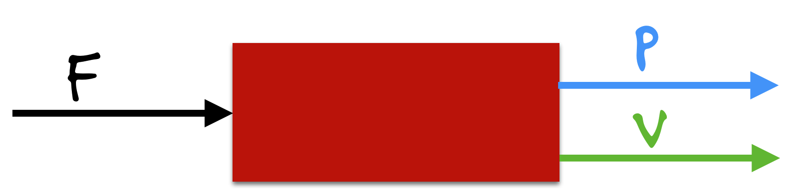
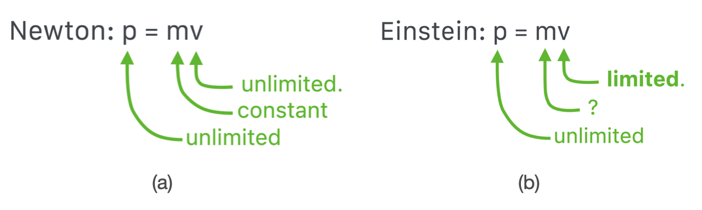
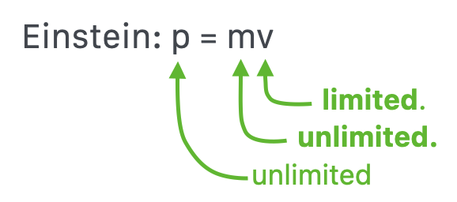
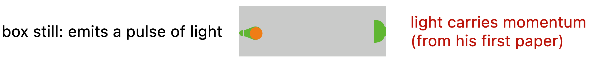
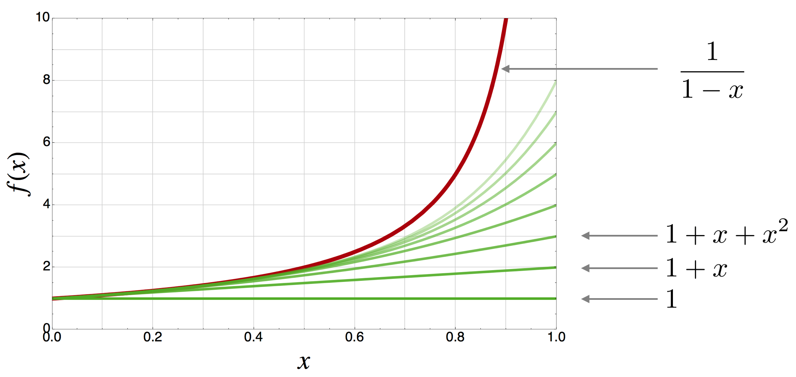
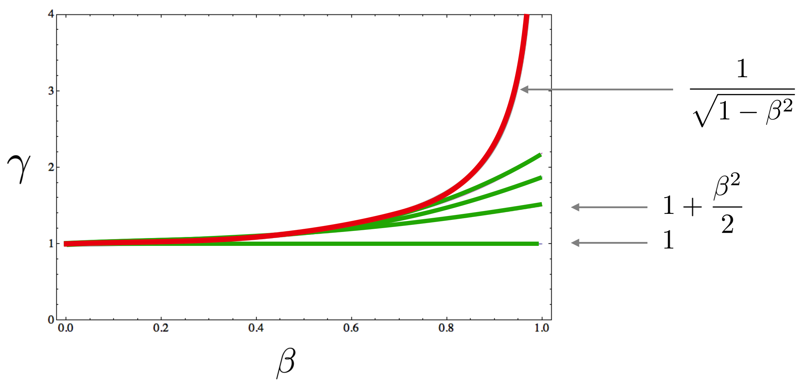
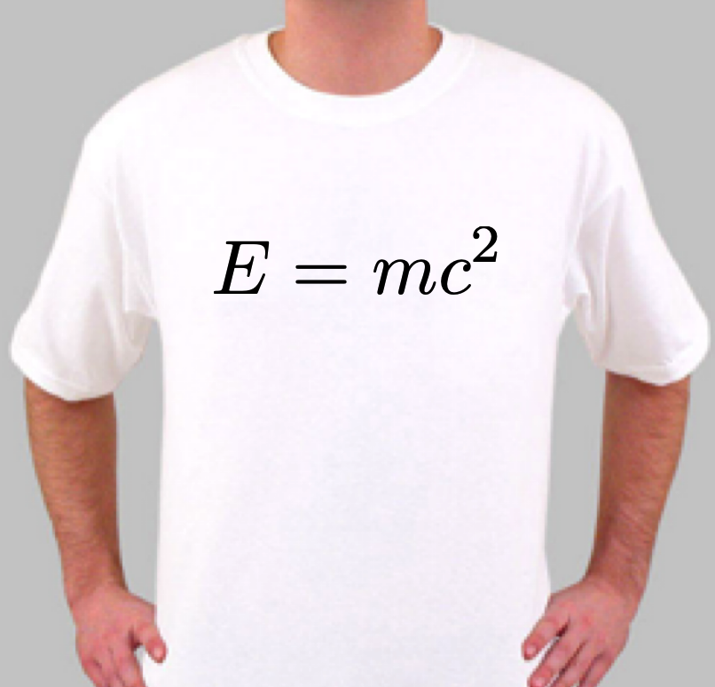
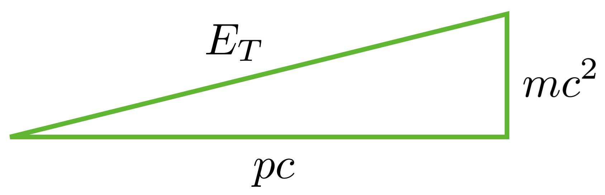
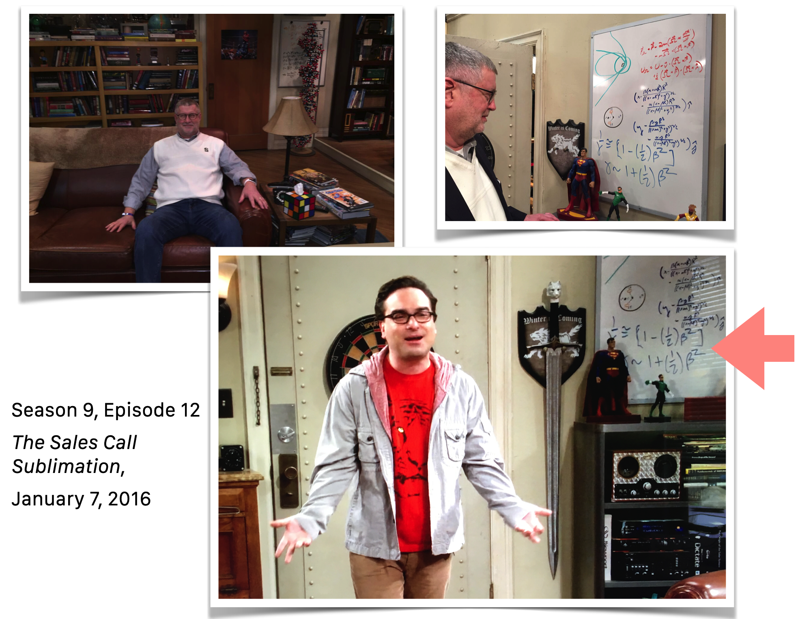
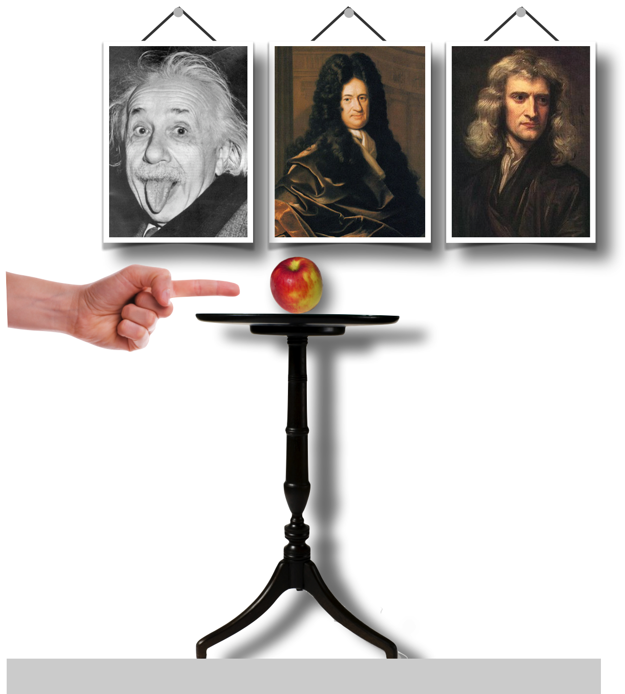

18.2. Working Our Way toward Relativistic Energy#
At the end of the last lesson, we crept up on the notion that the speed of an object being pushed at a constant value changes, but not linearly, so that it never exceeds the speed of light. Here’s a cartoonish sketch of that summarizes what seems to be going on.
What we had is a constant force pushing on a mass, creating a momentum, and so a speed.

Now, let’s compare the Newtonian experience (rather, assumptions) with the relativistic experience.

In (a) we have the Newtonian notion of a fixed mass and an unlimited speed and so an unlimited momentum. In (b) we have the relativistic situation in which we know that the speed is limited and there’s no limitation on the momentum. So how does that happen? The mass must be unlimited. Not constant, as in the Newtonian definition.

Mass is going to become a very strange thing.
Remember that mass for Newton was problematic. It was a definition that was circularly defined in terms of density. How you measure it presumes that you know how to measure acceleration and force…without the mass. Circular. Relativity is the opening salvo against the naive notion of mass from Newton and we’ll see that with the Higgs Boson discovery in 2012, our ideas of mass changed again…to be even more strange.
18.2.1. Relativistic Momentum#
Momentum is still:
Pencils Out! 🖋 📓
But by now you know the song: that numerator and denominator depend on the frame and so a new kind of momentum – relativistic momentum – is required. I’ll just state it here:
Looks familiar, but there’s the \(\gamma\) function, which tends towards \(1\) when \(u\) is very small, so we get back “regular” momentum.
18.2.2. An Einstein Thought Experiment#
Let’s follow one of Einstein’s typically imaginative thought experiments that he suggested in his original 1905 fourth paper. The T-shirt equation paper. In order to appreciate it, I need to tell you something that he postulated in his first 1905 paper that was on light quanta – that light consists of little particles that he called “quanta” and which were named “photons” in 1925 by someone else. The thing that we need from this idea (which we will talk about a lot later) is that these little particles carry momentum.
So inside a box is a source of light (photons) at the left and an absorber of photons on the right. We start with the box sitting still, minding its own business.

Now the bulb is turned on and light begins to stream away from it, that is, photons carry momentum to the right.
So momentum is now imbalanced to the right, unless the box itself moves to the left with the same, but oppositely directed value of momentum. It recoils.
So from the outside, you see this box suddenly begin to lurch to the left! Then, when the photons strike the absorber on the right-hand side of the box (perfectly absorbing so that there’s no reflection)…the box suddenly stops!
Einstein analyzed this event and showed that the center of mass of the box rearranged itself and that therefore the photon has to behave as if it has a mass.
Seriously. In the first paper (and every other paper anyone has written since!) the photon is an object with zero mass. And yet, this simple head-experiment concludes that the light has an energy – even Maxwell knew about electromagnetic waves carrying energy. But since light has momentum, we must interpret the situation to suggest that the photon’s energy leads to a second conclusion that suggest that energy is mass-like. That’s a lot to swallow.
18.2.3. Approximating Functions#
There are a number of ways to get to the T-shirt equation and most require calculus which I’ll not do in QS&BB. I want to sneak up on it with a plausibility argument, rather than a direct proof. In @ref(#lessonmath) I introduced the notion of approximating a function’s shape by successively adding together a string of functions, each one getting you closer and closer to the full function. This was Newton’s idea. What I did in that lesson was look at the function
and showed that it can be represented as the series
the dot-dot-dot means that this progression continues to an infinite number of terms and that when you add them all up you get back \(\dfrac{1}{1-x}\). Almost magical.
Here’s what that looks like:

Notice a couple of things. First, the full function is the top, bold red curve. Second, notice that each curve in the series does indeed get closer and closer to the desired function. It’s going to take a lot of them to get there – an infinite number of them.
Pencils Out! 🖋 📓
Finally, notice that for small \(x\), say below \(x=0.2\) the first two terms, \(1+x\) do a pretty good job. So in practical terms, if you’re sure that your \(x\)’s are going to be less than that value you don’t have to use the whole function, you can get by with just \(1+x\).
So, with that reminder…we have a function that’s in every relativistic equation, namely, \(\gamma\):
and maybe you know where I’m going. We can indeed express this function in an infinite series and it would be:
Here it is plotted:

where I’ve emphasized only the first two terms. Again, if we are only interested in very low \(\gamma\)’s we can get away with just the first couple of terms and we’ve done a pretty good job of approximating the whole relativistic gamma function. Knowing that “regular life” is pretty Newtonian, that part of the gamma function should do a pretty good job for barely relativistic situations.
18.2.4. Einstein’s Energy Equation, Through the Back Door#
Let’s play with that term now and see if we can gain some insight.
Pencils Out! 🖋 📓
This is a pencil-out activity. Look at the first two terms in the \(\gamma\) expansion:
Look at the second term. This is really suspiciously like the classical kinetic energy form, \(K=\frac{1}{2}mv^2\), right? Let’s run with this and see what happens. In order to nudge it along, let’s multiply by \(m\) and by \(c^2\). That would do it, right?
By now we’re used to the idea that slow objects’ modeling are an approximation to the complete relativistic objects’ form. We’re obviously in a slow-ish format here by keeping only the first two terms of the \(\gamma\) function. So we isolated the “regular” kinetic energy piece on the right and so we also know that whatever is left in the other two terms are also energy terms:
\(m\gamma c^2\) is some kind of energy
\(mc^2\) is another kind of energy
\(\frac{1}{2}mu^2\) is the familiar kind of energy of motion, kinetic energy
This is a fundamental change in how we think about energy. What we’ve created through the back door is a new kind of energy:
Total energy of an object \(=\) its energy of mass \(+\) its energy of motion
Even if the object were not moving, it would still have energy in this picture. In fact, all of energy can be described by this little formula - potential energy, chemical energy, nuclear energy, electromagnetic radiation energy, the whole shebang energy.
Here’s our accounting:
\(E_T =\) total energy of an object \(= m\gamma c^2\), first formulation
\(E_m =\) mass energy of an object = \(mc^2\)
The T-shirt equation:

I’ve left out the kinetic energy here because my back door approach to this was for non-relativistic motion, so our original \(\frac{1}{2}mu^2\) term was relevant. But the fully relativistic kinetic energy is different and we can simply derive its form from what we’ve got by generally calling it “\(K\).”
So our inventory is:
\(E_T =\) total energy of an object \(= m\gamma c^2\), first formulation
\(E_m =\) mass energy of an object = \(mc^2\)
\(K =\) energy of motion \(=\) \(mc^2(\gamma -1)\)
\(p = m\gamma u\) \(=\) relativistic momentum
Have a look at a deeper explanation 1 🖋 📓
With a little bit of algebra, we can write our second form of the total energy:
and we can understand Einstein’s little game of the box with the light.
Please study example 1 🖋 📓
Remember, he had to conclude that if light carries momentum, which Maxwell knew, then it has to behave as if it has a mass, which is not strictly true. In Equation totalE we see how that works. If light quanta are massless, and they are, the total energy is not zero, it’s:
We can see this in a visual way using Pythagoras’ theorem since

For different kinds of objects, as the mass leg gets smaller and smaller, the hypothenus gets closer and closer to the horizontal leg.
Note
So what does one do when visiting a friend at UCLA who was the Science Advisor for the television program, The Big Bang Theory? And he hands you a marker and your own on-air whiteboard? Why you tell the world how to expand the gamma function. That’s what.

Please study example 2 🖋 📓
18.2.5. Two Things to Worry About#
There are two issues buried inside of the general total energy relation that merit attention:
Note
Thing 1. Remember that Einstein started his discussion with his quantum idea, which we’ll have to wait to learn more about. But I’ve already told you that the photon – the quantum of light – has no mass. Notice that this equation for energy accommodates that.
which is precisely what he suggested was the case for a single quantum of light in his first 1905 paper.
and
Note
Thing 2. Remember that a square can have two roots, one positive and one negative. What about the total energy squared?
What are we to make of a negative energy? Stay tuned. But this plagued efforts to create a quantum mechanics that was relativistic.
Please study example 3 🖋 📓
18.2.6. Remember How We Got Here?#
I started worrying about inertia in the last lesson when we found that a constant force applied to a massive object would result in a constant acceleration (our example was \(g\)) but that the speed of that object would increase at a slower and slower rate, never passing \(c\). Our notion of relativistic mass is a way to think about why that is the case. Since here, \(m_R = \gamma m\) it increases with speed through the relativistic gamma function:
Remember to push Run:
So if you’re fortunate enough to be moving at 80% of the speed of light, your mass as viewed from a Home frame would be about 1.75 times your rest mass as you would “feel” in the Away frame. Food for thought, if you’re a particle physicist. Stay tuned.
Particle accelerators? They operate in the high-end of gamma…here’s a useful example of the gamma region of interest:
Remember to push Run:
Please answer question 1 📺
18.2.7. What Is Mass, Anyway?#
Einstein’s fourth, less than three page 1905 paper in November, was entitled, Does The Inertia Of A Body Depend Upon Its Energy Content? and he worked out (with different names for the variables):
“If a body gives off the energy E in the form of radiation, its mass diminishes by \(m=\dfrac{E}{c^2}\).” And he closed with, “It is not impossible that with bodies whose energy-content is variable to a high degree (e.g. with radium salts) the theory may be successfully put to the test. If the theory corresponds to the facts, radiation conveys inertia between the emitting and absorbing bodies.”
This. Is an extraordinary idea. Any object with a mass has a special energy solely associated with that mass. “Mass-energy” is a common term for this and captures the notion succinctly. But “energy-mass” is also applicable as we saw for the massless photon in the box! It had energy, but that energy conferred on the photon features that dynamically played the role of a mass.
It’s often said – INCORRECTLY! – that mass can be converted into energy. Mass IS energy and energy IS mass. We can convert the units, but not the actual substance. The best analogy I can think of is currency.
Today, $1 is convertible into 0.83 EURO. If I were to go into a shop in the Schiphol Airport in Amsterdam and purchase a magazine I could pay at the counter in dollars or I could pay in euros – both are readily acceptable in that airport. Their values are identical and indeed, colloquially we can convert dollars into euros and we would see visually the two currencies are represented by two different kinds of paper and coins. The economic value however is identical and the passage of one unit into the other is accomplished by a single conversion factor: 0.83. If I have 10 EURO, I can convert that into dollars:
The conversion of mass and energy units functions the same way. The value of mass-energy is identical, and the conversion of units is accomplished by a single conversion factor as well: from \(E=mc^2\), the conversion is
(in the MKS system). A very big number! If I have a 10 kg object, I can convert that into Joules:
The size of this is hard to wrap your head around. The amount of energy trapped in even tiny masses is enormous.
Pencils Out! 🖋 📓
But there’s more to this than just the identification of energy with mass and vise versa. There’s also the interpretation of mass as not constant. From a silly little rearrangement from above:
So, another way of looking at the total energy of an object is to combine its \(E_m = mc^2\) with \(K\) to get:
We’ve now got two “kinds” of mass: what we’ll call the “relativistic mass” and the “rest mass.” The latter is the mass of an object in its own rest frame, like proper time is the time that you read from the watch you’re wearing in your own rest frame. That we’ll call:
The former is what’s sometimes called the Relativistic mass:
The Relativistic mass changes as the speed of a frame changes with respect to a Home observer. By a factor of \(\gamma\).
In our Home and Away notation, the masses are related as:
Note
This is a controversial point. While there is no difference between two interpretations of mass, professional physicists do not use “relativistic mass” preferring to keep the idea of mass a constant quantity regardless of motion and deal exclusively with the total energy, \(E_T\). I think that for our purposes, the relativistic mass is a very nice interpretation which carries a lot of insight along with it. So don’t tell my friends, okay?
18.2.7.1. Momentum In Relativity#
Remember that I introduced momentum for relativity as if it’s a definition. That’s not strictly the case, and again, it’s a calculus derivation so it’s not appropriate for this text. But we can circle back and retain our original idea of momentum as
by using the relativistic mass in this relation: \(m_R = \gamma m\) where \(m\) is the rest mass. Now we get the originally postulated relativistic momentum:
Remember, that conversion factor is enormous. We need an apple.

Pencils Out! 🖋 📓
Remember that in this beloved example, our table is 1 meter above the ground and the apple has a mass of 0.1 kg. The kinetic energy when it hits the ground is 1 J if we approximate \(g \approx 10\) m/s\(^2\). What is the energy trapped inside of the apple’s mass in comparison?
…essentially \(10^{16}\) times its motion energy as it hits the floor.
Let’s go to an old-time particle accelerator – one in which protons are accelerated to only 95% of the speed of light.
Please study example 4 🖋 📓
Please answer question 2 📺
Please answer question 3 📺
From this point on, when I refer to “mass,” I’ll mean the relativistic mass, \(m_R\). If I mean the mass of an object inside of its own rest frame, I’ll explicitly refer to the “rest mass,” \(m\).